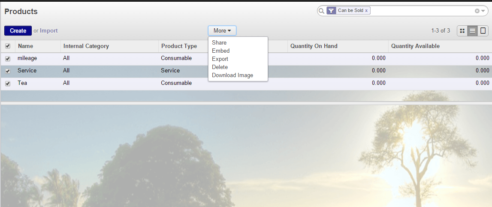

<section class="oe_container">
    <div class="oe_row oe_spaced">
        <div class="oe_span12">
            <h2 class="oe_slogan">Import Product Images From URL</h2>
            <h3 class="oe_slogan">download and import product images from url</h3>
        </div>
        <div class="oe_span6">
            <div class="oe_demo oe_picture oe_screenshot">
                
                <div class="oe_demo_footer oe_centeralign">Select Images, More> Download Image</div>
            </div>
        </div>
        <div class="oe_span6">
            <p class="oe_mt32">
				Many times you will want to import products from other systems using the odoo import feature. Odoo however does
				not offer an out-of-the-box feature to import image urls in url.
				Using this module you can import the image urls of your products and then download them in batch.
				Simply
				<ol class="simple">
					<li>Add 'Image URL' column in your csv/excel import file</li>
					<li>Import your products</li>
					<li>Select all products in products list view</li>
					<li>Click on More>Download Images</li>
				</ol>
            </p>
            <div class="oe_centeralign oe_websiteonly">
                Feel Free to <a href="mailto:info@exploredatasystems.com" class="oe_button oe_big oe_tacky">Contact Us</a> for support.
            </div>
        </div>
    </div>
</section>


